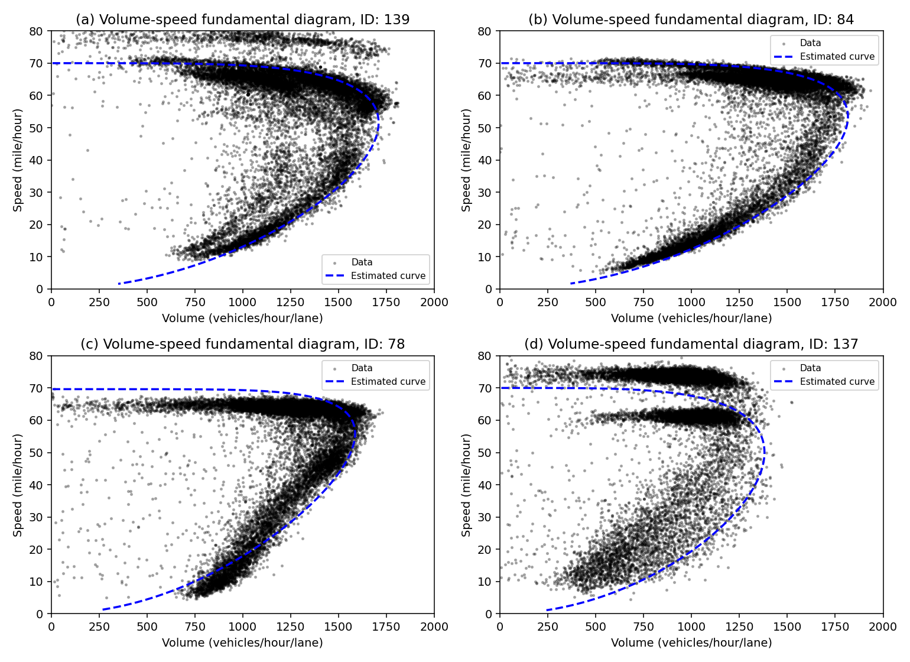
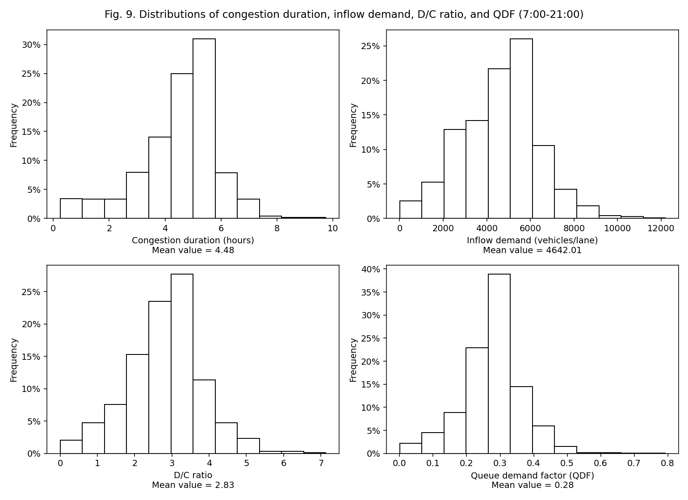
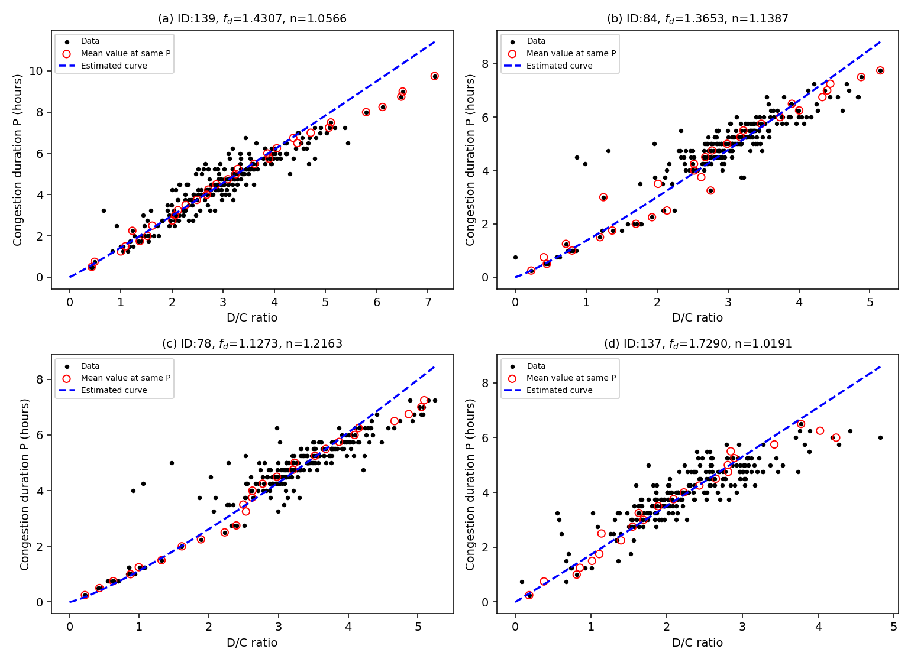
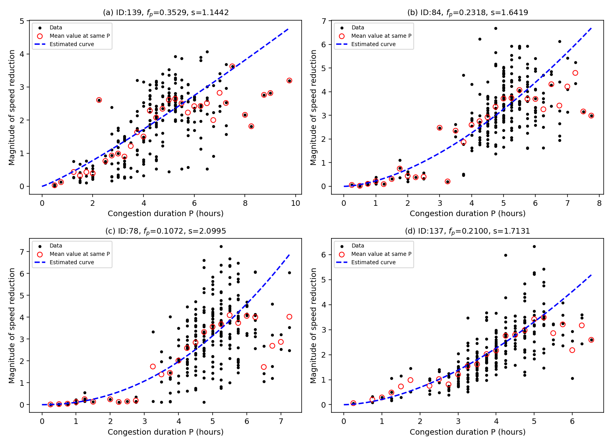
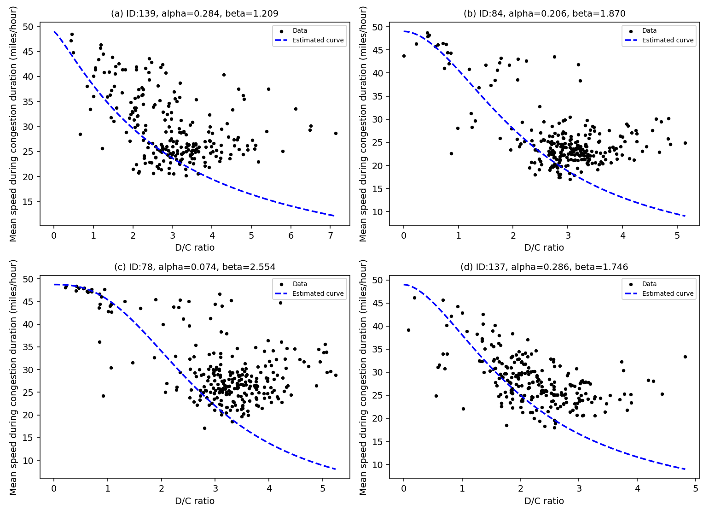
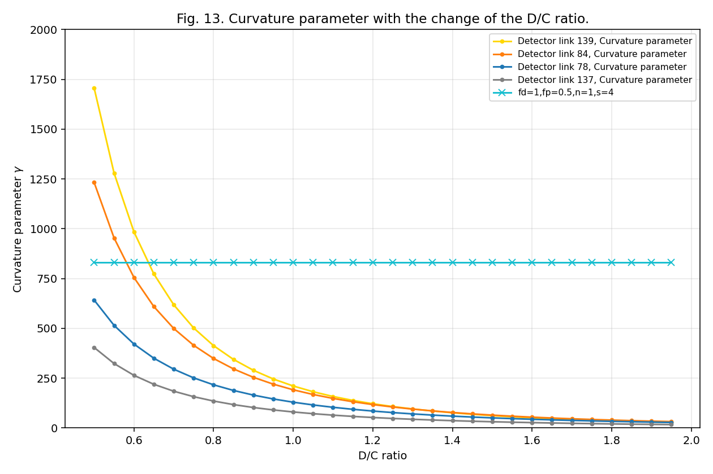
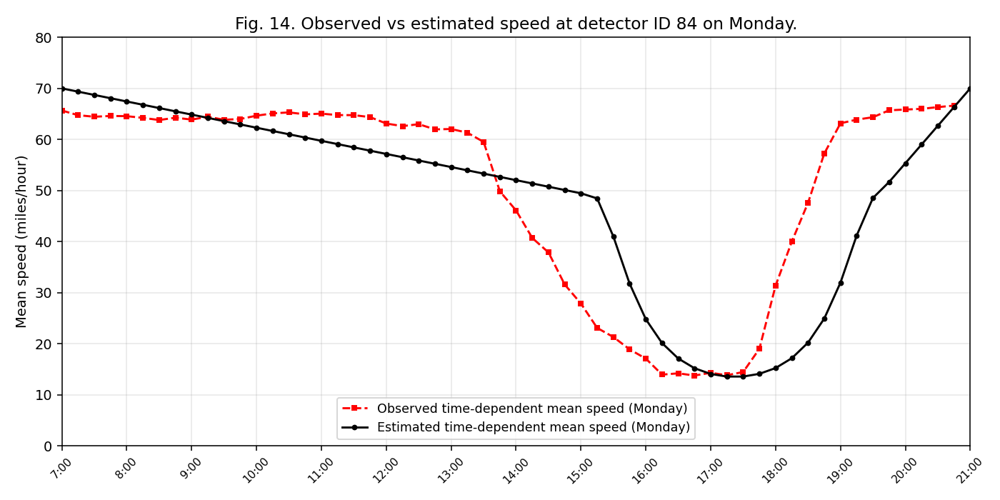
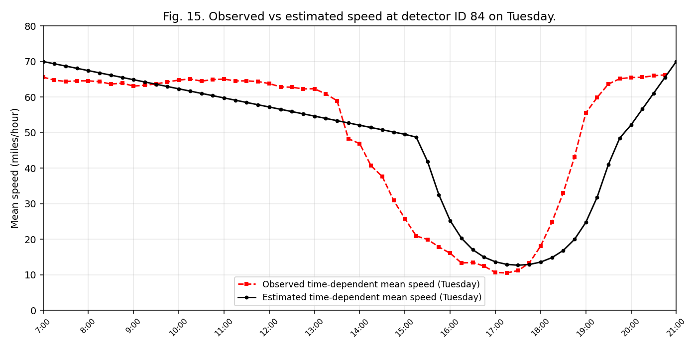
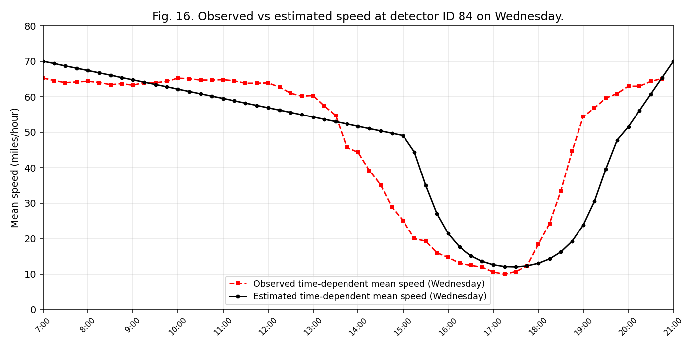
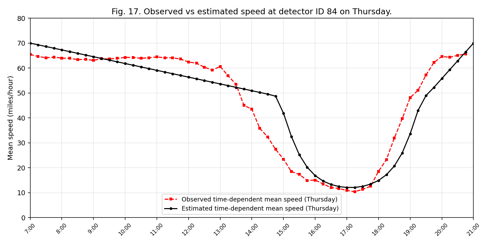

10figures reproduced (8–17)
4tables reproduced (5–8)
35/35keyed statistics PASS
exactTables 5·6·7 vs paper
publicdata in-repo
Rerun everything:
python reproduce_qvdf_paper.py — regenerates all
figures into figures/ and all tables as CSV, from data/corridor_measurement_I10.csv.gz
(raw year) + the derived training sets. No other inputs.Validation — paper value vs reproduced value, all 35 keyed statistics
| table | detector | statistic | paper_value | reproduced_value | tolerance | status |
|---|---|---|---|---|---|---|
| Table5 | 139 | capacity_vphpl | 1709.2 | 1709.2 | exact | PASS |
| Table5 | 84 | capacity_vphpl | 1816.5 | 1816.5 | exact | PASS |
| Table5 | 78 | capacity_vphpl | 1586.6 | 1586.6 | exact | PASS |
| Table5 | 137 | capacity_vphpl | 1380.6 | 1380.6 | exact | PASS |
| Table5 | 139 | speed_at_capacity_mph | 51.6 | 51.6 | exact | PASS |
| Table5 | 84 | speed_at_capacity_mph | 53.4 | 53.4 | exact | PASS |
| Table5 | 78 | speed_at_capacity_mph | 55.9 | 55.9 | exact | PASS |
| Table5 | 137 | speed_at_capacity_mph | 50.0 | 50.0 | exact | PASS |
| Table6 | all | n_valid_days | 1275.0 | 1275.0 | exact | PASS |
| Table6 | all | n_days_P_gt_0 | 992.0 | 992.0 | exact | PASS |
| Table6 | all | congested_day_ratio | 0.78 | 0.78 | exact | PASS |
| Table6 | all | avg_P_hours | 4.48 | 4.48 | exact | PASS |
| Table7 | 139 | f_d | 1.43 | 1.4307 | <=1% | PASS |
| Table7 | 139 | n | 1.06 | 1.0566 | <=1% | PASS |
| Table7 | 84 | f_d | 1.37 | 1.3653 | <=1% | PASS |
| Table7 | 84 | n | 1.14 | 1.1387 | <=1% | PASS |
| Table7 | 78 | f_d | 1.13 | 1.1273 | <=1% | PASS |
| Table7 | 78 | n | 1.22 | 1.2163 | <=1% | PASS |
| Table7 | 137 | f_d | 1.73 | 1.729 | <=1% | PASS |
| Table7 | 137 | n | 1.02 | 1.0191 | <=1% | PASS |
| Table7 | 139 | f_p | 0.35 | 0.3529 | <=1% | PASS |
| Table7 | 84 | f_p | 0.23 | 0.2318 | <=1% | PASS |
| Table7 | 78 | f_p | 0.11 | 0.1072 | <=3% | PASS |
| Table7 | 137 | f_p | 0.21 | 0.21 | <=1% | PASS |
| Table7 | 139 | s | 1.14 | 1.1442 | <=1% | PASS |
| Table7 | 84 | s | 1.64 | 1.6419 | <=1% | PASS |
| Table7 | 78 | s | 2.1 | 2.0995 | <=1% | PASS |
| Table7 | 137 | s | 1.71 | 1.7131 | <=1% | PASS |
| Fig9 | all | mean_P_hours | 4.48 | 4.48 | exact | PASS |
| Fig9 | all | mean_inflow_demand_veh | 4642.0 | 4642.0 | exact | PASS |
| Fig9 | all | mean_DC_ratio | 2.8 | 2.83 | <=2% | PASS |
| Fig9 | all | mean_QDF | 0.28 | 0.28 | exact | PASS |
| Table8 | 139_Friday | gamma | 3.82 | 3.59 | <=10% | PASS |
| Table8 | 139_Friday | P_hours | 5.9 | 5.96 | <=2% | PASS |
| Table8 | 139_Friday | v_t2_mph | 13.27 | 13.18 | <=1% | PASS |
Table 5 — calibrated fundamental-diagram parameters (exact match)
| link_id | ultimate_capacity | speed_at_capacity | critical_density | free_flow_speed | m |
|---|---|---|---|---|---|
| 139.0 | 1709.2 | 51.6 | 33.1 | 70.0 | 4.5 |
| 84.0 | 1816.5 | 53.4 | 34.0 | 70.0 | 5.1 |
| 78.0 | 1586.6 | 55.9 | 28.4 | 69.6 | 6.3 |
| 137.0 | 1380.6 | 50.0 | 27.6 | 70.0 | 4.1 |
Table 6 — congestion statistics (exact match: 1,275 days · 992 congested · 78% · 4.48 h)
| Detector | valid_days | days_P>0 | ratio_congested | avg_duration_P>0 |
|---|---|---|---|---|
| 139 | 300 | 239 | 80% | 4.52 h |
| 84 | 325 | 255 | 78% | 4.77 h |
| 78 | 325 | 263 | 81% | 4.63 h |
| 137 | 325 | 235 | 72% | 3.96 h |
| Total | 1275 | 992 | 78% | 4.48 h |
Table 7 — calibrated QVDF coefficients (exact match)
| Detector | f_d | n | f_p | s | alpha | beta |
|---|---|---|---|---|---|---|
| 139.0 | 1.4307 | 1.0566 | 0.3529 | 1.1442 | 0.2836 | 1.2089 |
| 84.0 | 1.3653 | 1.1387 | 0.2318 | 1.6419 | 0.2062 | 1.8697 |
| 78.0 | 1.1273 | 1.2163 | 0.1072 | 2.0995 | 0.0735 | 2.5536 |
| 137.0 | 1.729 | 1.0191 | 0.21 | 1.7131 | 0.2862 | 1.7458 |
Figures 8–17










Fidelity notes. Tables 5, 6, 7 and the Fig. 9 means match the published values to
the printed precision (coefficients to machine precision via the paper's own stepwise calibration recipe).
Table 8 (curvature γ at each weekday's mean D/C) reproduces within ~1–10% — γ is the most derivative-sensitive
quantity (γ = 64·μ·(L/uc)·fp·Ps−4). Case study 2 of the paper (Figs 18–23,
corridor-level, Cheng et al. 2022 data) is not yet included.
Relation to the CBI+ pipeline
This reproduction is the reference anchor for the CBI+ benchmark gates: the 35 keyed statistics in
paper_reference_values.csv are what cbi_pipeline.benchmark_gates treats as the
I-10 paper benchmark. The pipeline's stage-5 QVDF (Q_n, Q_s, Q_cd, Q_cp) mirrors the same two-step
elasticity calibration (Eq. 25/27) in per-period form; the quartic queue in the CBI Lab and corridor
dashboards is Eq. (30)'s fourth-order td_queue.
Part of cbi_plus ·
benchmarks/qvdf_paper_i10/ · data provenance: the paper's public QVDF GitHub repository ·
reproduction validated 2026-07-08.